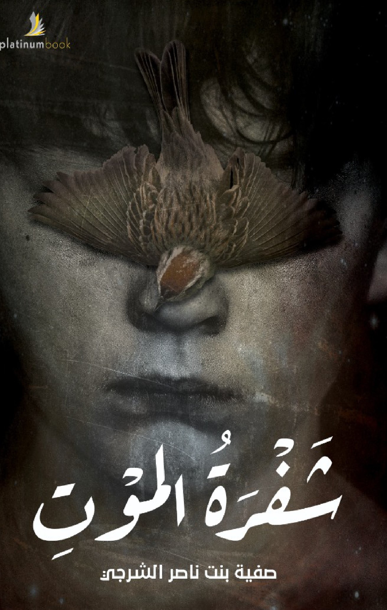

إن كنت تبحث عن سر الموت وسر الحياة بعد الموت، فقد بلغت مقصدك وعليك اكتشاف ما تخفيه الرواية من أحداث، فهذه الروية ستحملك إلى أحداث رهيبة ستكشف لك نظرية سعى لإثبات حقيقتها مجموعة من الشباب والتي أطلقوا عليها نظرية إثبات الحياة بعد الموت. إن كنت لستَ خائفًا فافتح صفحات هذه الروية واتركها تأخذك إلى حيث سبقوك أبطالها، فجميع تساؤلاتك عن ذلك العالم الغامض والمخيف والذي يطلق عليه البعض عالم الأرواح أو عالم الموتى، قد تجد إجاباتها بين طيّات هذا الكتاب فكل ما ستقرأه وستتعرف عليه، كفيل بجعل الخوف يتسلل إلى قلبك وبلا رحمة؛ لذا عزيزي القارئ كُن مستعدًا لما هو آتٍ.

buy the book
buy the book